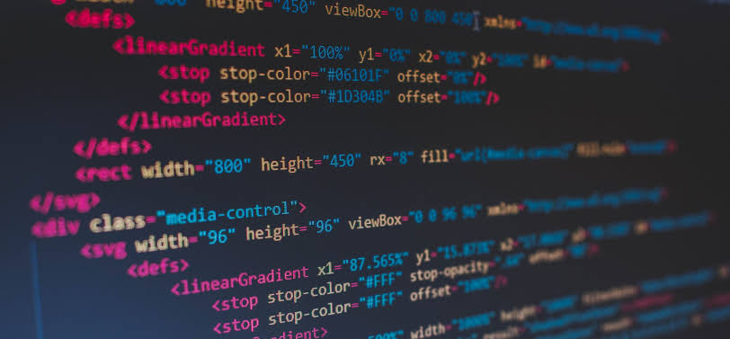

เบื้องหลังแนวคิดการออกแบบเว็บไซต์ เพื่อสร้างประสบการณ์ที่ดีที่สุดให้กับผู้ใช้งาน
การออกแบบเว็บไซต์นี้มุ่งเน้นไปที่ความเรียบหรู (Luxury) ความเรียบง่าย (Simplicity) และการเข้าถึงข้อมูลที่รวดเร็ว โดยนำหลักการทาง UX/UI มาประยุกต์ใช้ดังนี้:
(💡 ลองนำเมาส์ไปชี้ที่ "ตัวอย่างในเว็บ" เพื่อดูผลลัพธ์จริง)
การจัดลำดับความสำคัญทางสายตา โดยใช้ขนาดฟอนต์ที่แตกต่างกันอย่างชัดเจนระหว่าง Header และ Body เพื่อให้ผู้ใช้ทราบว่าส่วนใดคือหัวข้อหลักและส่วนใดคือรายละเอียด
เลือกใช้สี Platinum White และ Silver เพื่อสร้างความรู้สึกหรูหรา ทันสมัย และน่าเชื่อถือ ตามหลักจิตวิทยาของสีที่สื่อถึงความสะอาดและความเป็นมืออาชีพ
การรักษาความสม่ำเสมอขององค์ประกอบ เช่น รัศมีขอบโค้ง (Border Radius) ของปุ่มและ Card ที่เท่ากันทั่วทั้งเว็บไซต์ ทำให้ผู้ใช้รู้สึกถึงความเป็นอันหนึ่งอันเดียวกัน
ออกแบบโดยยึดหลัก Mobile-First และ Fluid Grid เพื่อให้เว็บไซต์แสดงผลได้อย่างสมบูรณ์ในทุกขนาดหน้าจอ ตั้งแต่คอมพิวเตอร์ตั้งโต๊ะไปจนถึงสมาร์ทโฟน
การสร้าง Feedback ให้กับผู้ใช้งานผ่าน Micro-interactions เช่น การเปลี่ยนสีหรือการยกตัวของ Card เมื่อนำเมาส์ไปวาง เพื่อบอกให้ผู้ใช้รู้ว่าองค์ประกอบนั้นสามารถโต้ตอบได้
การนำเทรนด์การออกแบบสมัยใหม่มาใช้ โดยการทำให้พื้นหลังมีความโปร่งแสงและเบลอ (Blur) เลียนแบบลักษณะของกระจกฝ้า เพิ่มมิติและความลึกให้กับเว็บไซต์